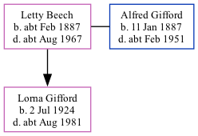

Letty Louisa Gifford (née Beech) cFeb 1887 - c1967
[ Home ] | [ Calendar ] | [ Surnames Index ] | [ Family History ]Letty Beech, the wife of Alfred Daniel Gifford (the first cousin twice-removed on the mother's side of Nigel Horne), was born in Chelsea, London, England <i>c.</i> Feb 1887<span class="citation">1,2,3</span> andhad 1 child, Lorna Winifred.<p>She died <i>c.</i> Aug 1967 in Hounslow, London, England<span class="citation">2,3</span>.
Children
- Lorna Winifred was born on Jul 2, 1924
Citations
- England & Wales births 1837-2006 - Findmypast
- England & Wales deaths 1837-2007 - Findmypast
- Middlesex Monumental Inscriptions - Findmypast
Media
Middlesex Monumental Inscriptions 1485-2014 - PRS/MIDD/MONUINSC/18535
England & Wales births 1837-2006 - BMD/B/1887/1/AZ/000041/322
England & Wales deaths 1837-2007 - BMD/D/1967/3/AZ/000319/155
Family Tree
Generated by Ged2Site. Last updated on Jul 20, 2025